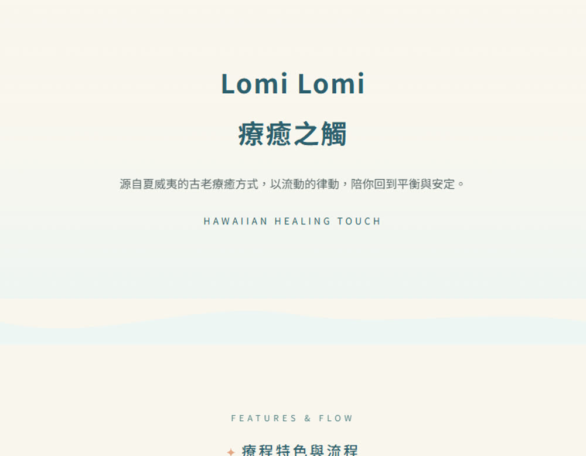
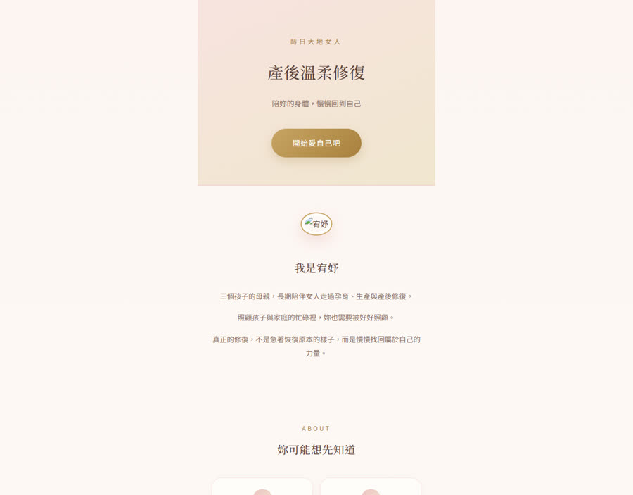
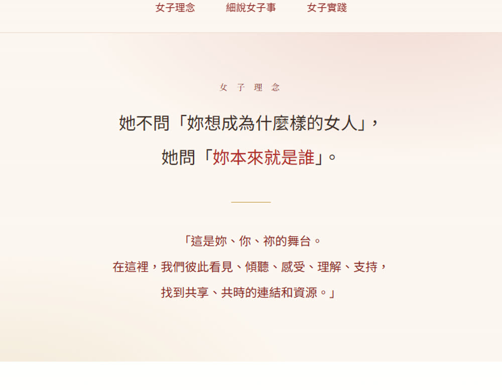
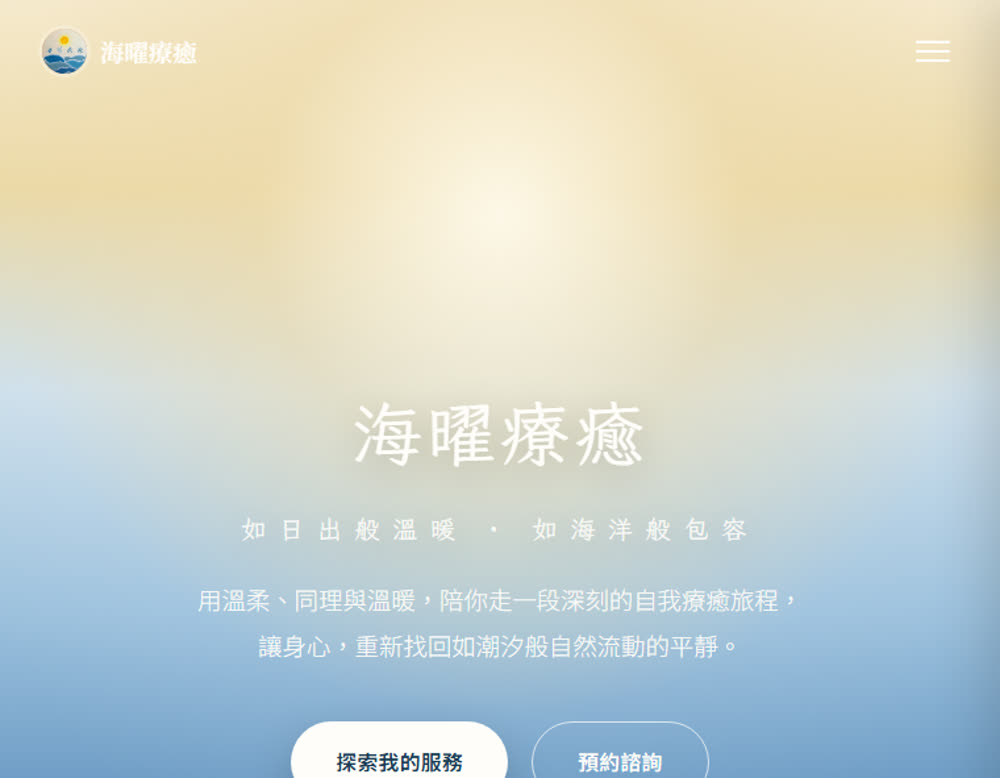
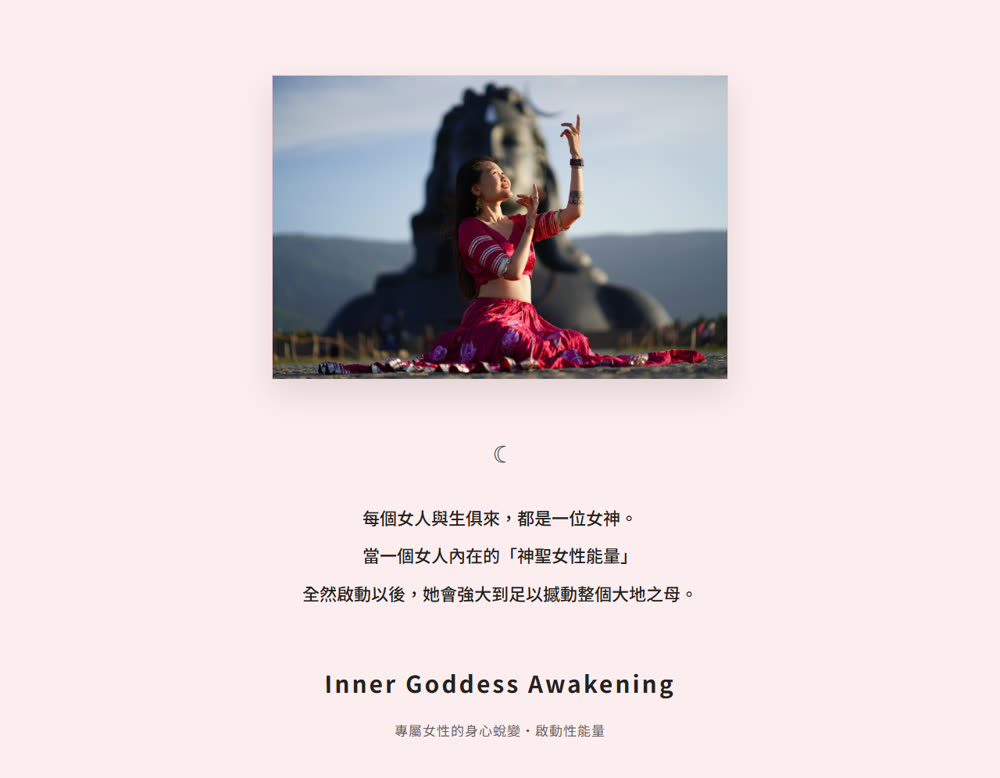
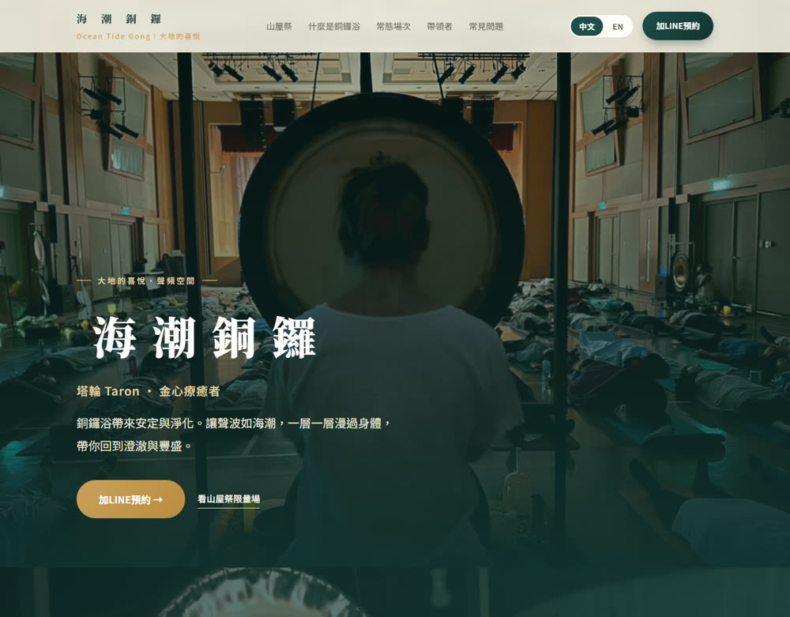
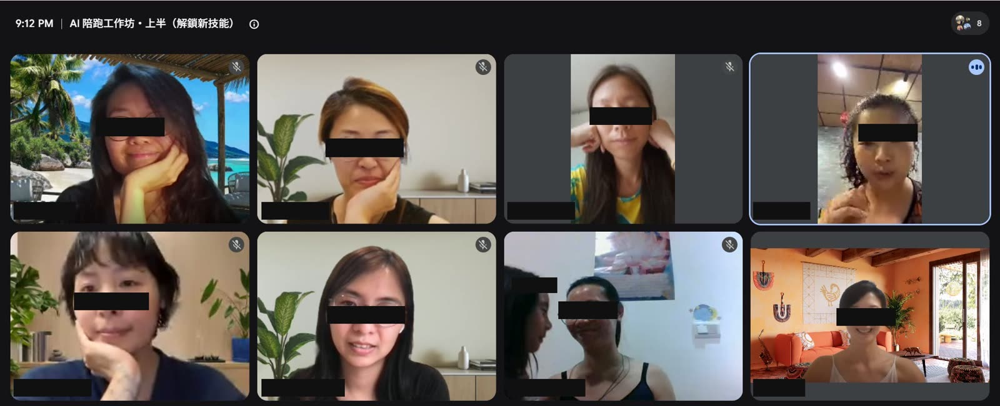

妳腦中那個一直想做、卻不知道怎麼變出來的東西 ——
讓我陪妳，用 AI 把它生出來。
用得上它，又不被它拉走。
// 專為女性的工作・創造與使命
// 報名第二梯，加贈 9/2 自媒體定位課・價值 NT$1,280
FOR_YOU
妳不是工程師，也不想變成工程師。
妳只是想把自己的工作、服務與創造，變成看得見、用得到的成品。
這堂課可能還不適合現在的妳，如果妳想要的是一套看完就好的影片、或希望有人全程幫妳代做 —— 這是「做中學」的陪跑，需要妳自己的手。
TWO_WAYS
妳是哪一種？沒有對錯 —— 但這堂課，是為第二種妳開的。
手機裡存了十幾個 AI，每個都試過一點，卻沒有一樣真的幫到手上的工作 —— 追得很累，產出很少。
不追新工具，把每週在做的事一件一件交給它，省下時間，把人留給真正重要的事。
WHAT_WE_USE
一樣叫 AI，但能做的事差很多。
| 一般 AI 聊天 | AI Agent（我們教的） | |
|---|---|---|
| 它做什麼 | 回答妳的問題，給妳一段文字 | 幫妳把事情做完 |
| 妳拿到什麼 | 一段文字，要自己複製貼上 | 一個真的網頁、一份真的表單 |
| 能不能碰檔案 | 碰不到妳電腦裡的東西 | 能讀、能改、能建立妳的檔案 |
| 多步驟的事 | 一次問一個，妳要自己接下去 | 自己拆解步驟，一路做到完 |
| 做錯的時候 | 妳要自己發現、自己重問 | 自己看到錯誤，自己修 |
| 像什麼 | 一個很會講的顧問 | 一個會動手的助理 |
妳已經有一個很會講的顧問了。
這堂課要給妳的，是一個會動手的助理 🌿
WHY_REAL_LOVE
我把這堂課叫做「真愛 AI」，不是因為好聽。
是因為我看過太多人跟 AI 的關係，是被它牽著走的 —— 追新工具、做出一堆看起來厲害卻不像自己的東西。
真的愛，是知道它能做什麼、不能做什麼；用得上它，但不把自己交出去。
不是背指令，也不是記步驟。學會怎麼跟它說話 —— 換一個任務、換一個工具，妳都還知道怎麼開始。
AI 會講錯話，而且講得很有自信。學會查證、交叉比對：什麼可以信、什麼要自己再看一眼。
好看不難，難的是好看又「是妳」。我們一起把妳的語氣、妳的故事，留在做出來的東西裡。
把重複的事交給它，把省下的時間還給人。工具是為了讓妳更常回到自己，不是更常盯著螢幕。
4_SESSIONS
四次團體討論：9/9・9/16・9/23・9/30（每次 20:00–21:30）。
第二梯把節奏收得更緊 —— 一樣是四次都帶走成品，一樣有群組答疑與全程回放。
第一週比較特別，也是新手最關鍵的一關 —— 我們一起把 Claude 裝好、串好 Google，學會讓 AI 讀懂妳、開口對話、幫妳改文件。這一堂練的是「靈活」—— 換個任務、換個工具，妳都還知道怎麼開始。別怕，我會陪著。
帶走：一個能動的 AI 工具 + 用它改好一份文件學會讓 AI 幫妳上網、多元查資料、交叉比對，幫自己養一個「隨叫隨到的研究員」。也在這一堂學會拿捏 —— AI 會講錯話而且講得很有自信，什麼可以直接用、什麼要自己再看一眼。
帶走：一套屬於妳的 AI 查找・整理流程學會把心裡想做的講清楚、讓 AI 聽懂妳；用我的真實案例帶妳把一份內容變成屬於自己的一頁網頁，並且當場推上網，拿到一個可以傳給別人的網址。好看不難，難的是好看又是妳 —— 我們會把妳的語氣留在裡面。
帶走：自己的一頁網頁 + 一個能傳出去的網址做一份能用的報名表單，讓 AI 自動整理回應；再把常重複做的事，變成可以一鍵重來的流程 —— 把省下的時間還給自己，而不是還給螢幕。最後我們一起看看，這四週妳生出了什麼。
帶走：一份能用的報名表單 + 自己的自動化流程 + 結業成品HOW_IT_WORKS
我想用一種「做中學」的節奏陪妳，而不是塞滿課。每一週前段我教新技能，當下妳就能跟著動手做；當下沒跟上完全沒關係 —— 那一週去玩、去試，下週回來分享進度就好。
旁聽別人的時段，通常是整堂課最精華的地方 —— 因為妳會從別人的問題裡，學到超多 ✨
（報名人數較多時，後段實戰討論會視情況彈性加開到 21:30 之後。）
THE_CIRCLE
四堂之後妳會有一個做好的東西。
但更多人跟我說，她們真正帶走的是別的。
前 20 分鐘我解鎖當週的新技能，剩下的 70 分鐘，一位一位輪流 —— 我陪妳看妳這週卡在哪、妳的發現、妳想問的任何問題。不是統一講解，是針對妳手上那個東西。
其他姊妹可以自由旁聽。而旁聽，往往才是整堂課最精華的部分 —— 因為她卡住的地方，常常也是妳還沒發現自己卡住的地方。
越簡單、越「笨」的問題越歡迎。妳的問題，很可能正是別人的問題，只是她還沒說出口。
不是自己一個人在螢幕前完成、然後沒人知道。有人看見，有人替妳高興。
做陪伴、療癒、身心靈、教育的女性。卡住的時候不是自己一個人 —— 而妳問的那個問題，也可能剛好接住了另一個人。
逗子妙生活的介紹頁，我請 AI 做了三種完全不同的設計 —— 試到滿意為止，不用重做、不用求人。
THEIR_WORKS
下面每一個，都是第一梯的姊妹在這一個月裡親手做出來的。
她們來的時候，沒有一個人寫過程式 —— 有幾個現在已經在線上收預約了。




「如日出般溫暖・如海洋般包容」—— 從品牌故事、服務項目到預約諮詢，一頁式網站配上她自己的漸層海景。

女性能量教練的一頁式網站 —— 從核心理念、服務內容，到身體與神經系統的說明，最後接上「預約 1v1 免費諮詢」。一頁把一整套療癒工作講完，也把人接住。
看網站 →

第一梯上課現場・週三晚上八點，一群女人一起把東西做出來。
為保護學員隱私，畫面已做去識別處理。
ONE_MONTH_LATER
郁文在結業那天寫了一篇長長的心得。
下面是其中幾段 —— 全是她的原話。
回頭看這一個月，才發現自己竟然一個人搭起了這麼多東西 —— 心理測驗網站、神諭卡抽卡頁、輪播內容策略，還有這份現在正在寫的文字。都是從「我想試試看」開始的，一步一步走出來的。
我學會的第一件事，其實跟技術無關，是「我可以先講清楚我要什麼」。只要我願意具體講出「這裡不對」「我要的是這種感覺」，事情就會很快被調整到我要的樣子。這讓我更信任自己的判斷力。
我也重新確認了一件很重要的事：不管 AI 幫我省了多少力氣，最後的聲音一定要是我自己的。我還是習慣自己再潤一次、甚至整段重寫，不是因為前面做得不好，是因為只有我自己知道，什麼樣的語氣才真正像我。
VOICES
七位姊妹走完了整趟課程。下面每一段，都是她們自己填在結業表單裡的原話 —— 依各自同意的方式署名。
課前：怕要看很多英文字，然後一堆步驟搞不懂
我真的心想事成，把預約功能完成了。
自動化的預約，讓工作時間效益提升，還能美美地呈現網頁 —— 自己都覺得不可思議。
「不會太難，你絕對可以的。」
— 精靈
課前：資料量很龐大，不知道該從何做起
有一步一步的行動，把腦中複雜的想法跟巨量的靈感，先落地成為一頁式網站、表單，再來逐漸優化。
「猶豫的時間可以拿來產出很多厲害的酷東西，不要停在原地了。」
— Hannah
課前：只會簡單對話，不知道如何建構資料或 AI 大腦
變得很有行動力、執行力，而且覺得無所不能，沒有難事。
「行動吧。當你開始願意去了解，一切原來比你想的還要容易、輕鬆、喜悅。」
— Chenti
課前：安全性的考量，以及卡關時的暴躁 XD
原本對 Claude 還只是玩玩的觀望性質，到現在是想認真投入。
真的有品牌陪產的感覺 —— 原來品牌的創立，也可以用懷孕待產的心情，陪著它慢慢孵育出來。
「試試看吧！Claude 真的可以幫助你把想法落地。」
— 一位第一梯姊妹（匿名分享）
課前：擔心 AI 達不到我的標準，反而更耗能 —— 倒不如全都靠自己來
原來 AI 有這麼多不同的創造和可能性呀！看到有人做出品牌的一頁式網站、串接表單、跟 Canva 協作、甚至玩出心理測驗，覺得自己也被激發出滿滿的靈感。
「保持開放和玩心，就會發現可以很正面地跟 AI 相處。」
— 郁文
課前：覺得怎麼可能，應該要動很多工程師的語言才可以
AI 幫助我們行動落地，但也要有覺知地使用。
「想建活動網站、想知道怎麼快速使用 Claude 的，非常推薦 —— 有陪跑省力很多。」
— 宥妤
課前：使用太複雜，卡住沒人問
變得願意探索和遊戲。
「開始後就會發現一切都不難 —— 難在未知的恐懼。」
— 柔懿
7 / 7
第一梯每一位
都帶走了自己的成品
一頁式網站・線上預約系統・報名表單
心理測驗・神諭卡・活動網頁
DETAILS
第二梯・九月開課，四次濃縮版。第一梯七位姊妹，課程結束後每個人都帶走了自己的作品。
不是行銷話術，是時間算出來的 ——
一堂 90 分鐘，扣掉前 20 分鐘上課，剩下 70 分鐘要分給每個人 10–15 分鐘的一對一。
人再多，那段時間就不夠深了。
一堂完整的自媒體定位課：怎麼找到自己的位置，找到之後怎麼經營下去。
單堂定價 NT$1,280 ——報名第二梯的姊妹，免費參加。
因為我發現，卡住大家的常常不是 AI，是不知道自己要做什麼。
所以我把它排在開課前一週：9/2（週三）20:00–21:30，線上、全程開放回放。